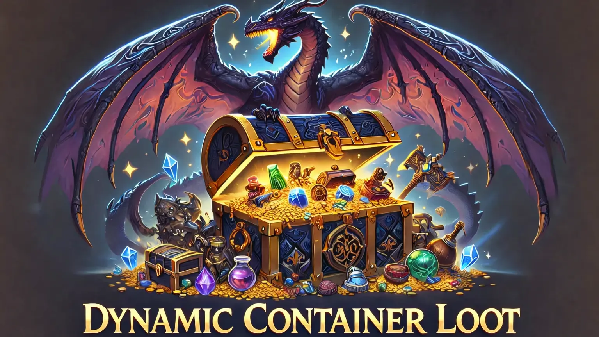

Dynamic Container Loot
Restore compatible container additions and removals that would otherwise be lost to the last mod in your load order. The last version remains the starting point, with rules available for cases where you want a different result.

Get started
- Choose the plugin download for your exact Skyrim version and store edition. Use the matching SKSE and Address Library required by that download.
- Install the complete package with your mod manager, including its Data assets. Back up personal settings before replacing an older mod folder.
- Start Skyrim through SKSE. For these settings, restart Skyrim after saving changes unless the guide describes a separate reload control.
The gameplay plugin works on its own. You can edit its settings file with a text editor, or install Prisma UI Settings Menu and its requirements for an optional in-game editor. Press F10, choose the mod, save, and restart Skyrim. The menu definition shipped with a mod is separate from your personal settings file.
Settings
Edit Data/SKSE/Plugins/DynamicContainerLoot.json. Startup creates missing settings and can import supported legacy INI values once. Reports are on by default; detailed logging and ESP creation are off.
| Setting | What it changes |
|---|---|
| Container and item protection | Leave whole containers or chosen items alone. This is useful for hand-made compatibility patches. |
| Specific choices | Compare source counts and supported entries in Compatibility. Copy a source result or make a supported amount choice, then save and restart. |
| Groups and packs | Keep related mods together or install a separate compatibility pack. Personal choices and installed packs remain distinct. |
| Optional ESP | Normal use needs no ESP. If you enable Create an ESP, review its report and generation record, enable the resulting patch in your manager, and rebuild it after relevant mod or rule changes. |
Read the result
Open the mod’s HTML report in your SKSE log folder, or use View Report in the optional settings menu. Search for an item, record or source mod, expand a result, and use Copy record or Copy change to share the relevant details. Reports describe the recorded startup result; they do not change your settings or prove that a generated patch was saved.
Compatibility and Rules
Use Compatibility to compare the versions supplied by different mods. Right-click a plugin, record or supported result cell to see its choices. Save changes keeps your personal rules; Undo and Discard work on the unsaved draft. Restart Skyrim to apply saved rules. Rules lists personal choices and installed compatibility packs separately; installed packs are read-only, and exports contain saved personal choices only.
Skipping a mod’s contributions is different from protecting a record: the last loaded version still supplies the starting result. Protect a record when you want its existing result left alone. Missing optional mods do not make a whole compatibility pack mandatory. The settings menu remains optional, including when using compatibility packs.
Limits and troubleshooting
- Automatic restoration infers which changes should be kept; a final mod may have intentionally removed something. Protect records whose exact patch result must win.
- Patch output can stop on unsupported fields, localized names or reference layouts. A calculated result does not prove that an ESP was written.
- Generated-patch ownership records protect unknown or edited patches. Review the log rather than repeatedly forcing a replacement.
- Restart after changes. An already enabled patch remains active until you disable or replace it and restart.
Existing project and requirement links
Credits
Created by Supertron. The source retains the SKSE team’s interfaces, CommonLibSSE-NG, powerof3’s ClibUtil and herumi’s xbyak notices where included. Optional Prisma UI integrations also credit the Prisma UI framework. Each dependency keeps its own license; the project’s included license and notices remain the redistribution reference.